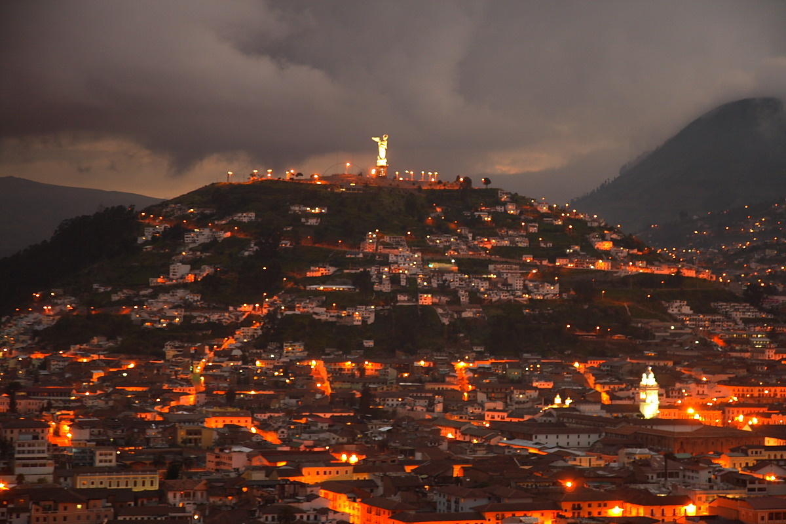
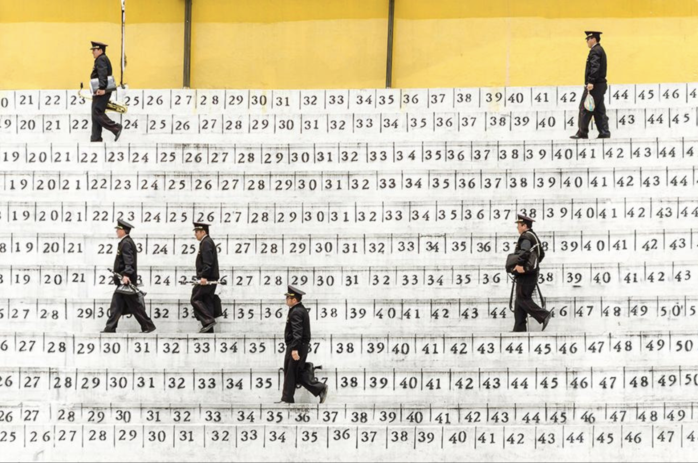

Quito es el lugar donde los refugiados se sienten en casa. Los migrantes emprenden una nueva vida acoplandose fácilmente con la ayuda de los quiteños, que son personas muy carismáticas y con buena voluntad de ayudar para salir juntos adelante.
Quito cuenta con diversos lugares donde adaptarse, con diferentes tipos de clima, zonas pobladas y futuristas, como también numerosos sectores con espacios verdes para alejarse un poco de la ciudad. En este 2080 cuenta con el 80% de zonas pobladas y el 20% de espacios verdes que todavía se conservan.
Quito no deja atrás sus tradiciones, se adapata al nuevo medio y a las nuevas generaciones, pero la gente no olvida las tradiciones que identifican a los quiteños. Como sus fiestas, sus lugares típicos, sus eventos culturales. Cada año se organiza una agenda de eventos con cada vez más tecnología de su mano, la experiencia cada año se vuelve diferente.